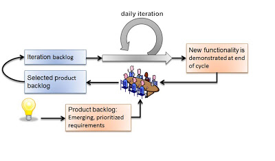

Seven Pitfalls with Agile or Scrum Methods
Seven Pitfalls with Agile or Scrum Methods
The post describes a presentation I gave at a company internal technical day. It reflects situations we have seen in a lot of agile projects over the last years.
I assume that the Scrum approach is well introduced in your company.
You are already proficient with Scrum, eXtreme Programming, Clean Code, Code Refactoring, how to write stories and story maps, and techniques such as TDD, ATDD.
You are using Scrum well and can laugh about all these posts about Scrum-But(t).
Misunderstandings about Scrum still abound.
We will present common pitfalls seen in teams already applying Scrum; meaning teams using Scrum as an empirical process, holding the meetings as described in the Scrum guide, and producing all expected artefacts.
We want to increase your awareness and reflect how you can become better Scrum experts. We exhort you to eliminate these misunderstandings in your projects.
What is Scrum?
 The Scrum approach is clear, well documented and shall be done by the book.
The Scrum framework is straight forward. The possibilities inside are unlimited.
It is like chess, the game has a simple set of rules. The variants how to play a game are limitless.
This article is not about Scrum But impediments describing common errors how meetings are held, artefacts created or roles lived.
We are talking about misunderstandings once you have reached this first level of mastership. Before talking about misunderstandings, we should remember the most important facet of Scrum. Scrum is all about ROI. Scrum was defined because the founders were convinced you could develop more effectively better products with higher value.
The essence of Scrum is ROI
All decisions in Scrum should be based on Return of Investment ROI.
Each time you doubt how you should do an activity, ask your team what is the ROI of your proposition?
Stakeholders want ROI. Each time you request budget from your stakeholders, you should always remember.
you want stakeholder’s money, convince them. Show your different solutions to the problem.
|
As a stakeholder I want to see:
|
In other words, we want to Bang for the Buck
You shall fill all time-boxed meetings
The agile manifesto states
Individuals and interactions over processes and tools
Customer collaboration over contract negotiation.
Perhaps too often we interpret these sentences as
-
Respect people, have nice interactions and avoid any hard discussions.
-
Collaborate with the customer, never disagree and avoid harsh truths.
Swiss people are well-educated. They always empty their glasses in the restaurant and have trouble leaving some wine in the glass. They also do not like conflict.
We often forget the Pareto rule, 80% of all solutions are found in 20% of the time. Is it worth the time to find a slightly better solution for the remaining 20% of the problems? In Scrum terminology,
" it is also 20% less important. " Meeting costs versus solved issues. Meetings cost money. Meeting with eight people and of a duration of 30 minutes cost in Switzerland around 600 Swiss Francs or 500 Euro.
|
ROI is Avoiding meetings.
Interesting enough, all Scrum meetings have a clear agenda, a moderator and a documented result. Do the same for additional meetings, Remember two ground rules Once you have reached the goals of the meeting, stop the meeting. A team decision is about 20% better than a qualified individual decision. |
Compute your ROI.
You shall have a cross-functional team
 Scrum teams try to be fully cross-functional and invest a lot of effort to reach this goal.
They probably do it because it is written in all Scrum tutorials.
Every person should be able to take a task from the Scrum board and implement it.
It is like a soccer team where each team member can play all roles.
Scrum teams try to be fully cross-functional and invest a lot of effort to reach this goal.
They probably do it because it is written in all Scrum tutorials.
Every person should be able to take a task from the Scrum board and implement it.
It is like a soccer team where each team member can play all roles.
|
ROI: Learning costs to cost of errors You need T-shaped team members. This concept was described in the mythical man-month book by Fredericks Brook Junior [1] and later by Grady Booch before most of you were born. A T person is a master in one technical area
In fact, Square-shaped team members would be better but are very hard to find. To increase your ROI, the specialist of the team should perform the tasks it is best suited for. But a good team also do risk management to ensure that another person can do the job if the main specialist is not available. See risk management theory how the cost of a risk is evaluated to calculate the ROI of training additional team members. The simplest way to distribute knowledge is the four-eyes principles exemplified through pair programming and peer checkin. |
Are you doing peer activities in your company?
As a rule of thumb, a good T-shape person
-
Is master in one technical area.
-
Has a delegate.
-
A challenger and an apprentice.
-
Care about the domain of his users.
You shall allow changes anytime
 Scrum is about agility.
Therefore, you have the right to change anything at any time, isn’t it?
Your stakeholders need the changes now.
They cannot wait until the end of the sprint, a mere ten working days or two weeks of elapsed time.
But Scrum also states we have a vision, features, a minimum viable product and a potentially shippable product.
How often can you change these key concepts?
What is the balance between agility and chaos?
Scrum is about agility.
Therefore, you have the right to change anything at any time, isn’t it?
Your stakeholders need the changes now.
They cannot wait until the end of the sprint, a mere ten working days or two weeks of elapsed time.
But Scrum also states we have a vision, features, a minimum viable product and a potentially shippable product.
How often can you change these key concepts?
What is the balance between agility and chaos?
|
ROI: New value versus cost of development and associated errors First, let me state some concepts deeply entrenched in Scrum Sprint backlog cannot be changed during a sprint. This is Scrum. Bend it with Kanban - for maintenance activities -, agile approach is about a minimum viable product release as soon as possible. This definition is part of the vision and the initial release planning, Release planning is a must in real Scrum projects. So you have the right to change everything at the end of each sprint, but the costs are enormous. |
Here again we are back to ROI computations.
As a rule of thumb to test your decision, Uncle Bob stated in the "Clean Coder" book if you deliver an application with errors. The only professional approach is to sign personally a check to the customer for the loss of income. In other words, are you ready to change the user interface two hours before the sprint demonstration will be held?
You shall not perform up-front design Architecture emerge during the coding of the solution.
So teams state that - No architecture is needed before starting coding, - No enterprise architecture should be defined or look at, - No non-functional considerations are needed. Look at the picture. Could you design a village without knowing about the ground, the kind of population, do you need school, do they have a flood in the area? They believe that refactoring will solve all the problems. Architects are no more needed, we are all talented hackers.
|
ROI: Architecture work versus write it twice
|
As a rule of thumb Be honest: our systems are complex, but there is no groundbreaking work. Similar solutions already exist. I expect a talented team to provide architecture with some prototyping in less than a sprint.
You shall write user stories during coffee breaks
Writing user stories is easy, and anyway nobody has time for - The product owner has better to do. He writes the stories during a coffee break or just before the start of the planning meeting, – Anyway just read the requirements, it is all written down, - The developers want to code, they have no time to write some user stories or improve them.
Scrum states the product backlog is the most important document in a Scrum product.
|
ROI: New features with the most value Creating a new successful product is a full-time job.
|
If not why? As a rule of thumb, Writing quality user stories are as tough as writing requirements.
It is the same job!
Be honest: Developers cannot write clean requirements or design a clean user interface
You shall not train engineering practices
You shall not train engineering practices
-
The process solves all problems.
-
I want to code. I do not have time to become a craftsman.
-
Scrum is snake oil. It cures all illnesses and makes you immortal, For the older ones, do you remember CASE, CMM and ISO-9000.
-
The PROCESS promises that you will deliver high quality software on time, on budget with unqualified and cheap collaborators.
Do you really believe in snake oil?
Do you think that a collaborator can win a competition just respecting a process?
He must train every week to achieve and maintain a given level of skills.
|
ROI: Engineering versus bureaucracy
Use the concept of coding dojo as an approach to improve. |
You shall worship Scrum as the PROCESS
 Scrum is a framework.
You can use it to manage different things, including complex product development.
Scrum is a framework.
You can use it to manage different things, including complex product development.
Scrum is defined in the Scrum Guide and consists of roles, events and meetings, artefacts, and a set of rules binding them together. It is based on empirical process control and bottom-up thinking.
|
Each sprint to ameliorate some aspects, measure and decide if the change is worth the effort? But Scrum will never give checklists to guarantee success. This job is YOURS. Scrum is the best approach to fail fast and learn. You can learn and improve. |
Call for Action
Eliminate these misunderstandings in your projects
Act using ROI
What is the risk?
The truth is complex, more blurred. The answer for your product cannot be stated in one standard rule set. We are talking about agile quality assurance, lean approaches and the best practices.
Best practice should only be selected through its ROI.
Please look at the Software Craftsmanship Manifesto.
Not only working software, but also well-crafted software, Not only responding to change, but also steadily adding value, Not only individuals and interactions, but also a community of professionals, Not only customer collaboration, but also productive partnerships, That is, in pursuit of the items of the left, we have found the items of the right to be indispensable.